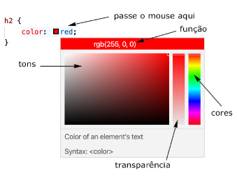

O site Adobe Color vai te ajudar a escolher as cores baseado nos esquemas mostrados na pasta anterior. Acesse-o hein https://color.adobe.com/pt
Nele existe o modo Criar, onde você pode escolher o modo de cores (RGB para monitor) e a regra harmônica, nele você cria sua paleta. Já no modo Explorar você consegue ver paletas já prontas, podendo copiar elas se quiser.
Além dele existe também o Paletton que até mesmo lhe fornece um exemplo de página com a paleta escolhida, e também o Coolors, que é mais para quem quer criar um paleta do zero, ele gera automaticamente e vc pode travar as cores q gostou, assim gerando as outras até obter uma paleta completa.
Até agora no código CSS vimos valores textuais como red e blue.
No VSCode, criando a propriedade cores em CSS, podemos posicionar o cursor entre os dois pontos e o ponto e vírgula, ao clicar Ctrl + Espaço
você obterá uma lista com os valores possíveis de cores.
No entanto esse método é limitado, pois uma terna moderna pode exibir cerca de 65M de cores.
Para conseguirmos mais possibilidades devemos recorrer aos códigos hexadecimais ou às funções CSS rgb(), rgba(), hsl() ou hsla().
Para fazer isso, seleciona qualquer uma das cores iniciais e passe o mouse sobre o nome da cor, uma janela especial surgirá.

Nessa janela você pode alterar a cor, o tom e a transparência conforme desejar.
As cores em uma tela são compostas da junção de 3 cores primárias: azul, vermelho e verde. A junção dessas cores gera outras cores como magenta, amarelo e ciano. A junção das 3 cores primárias ao máximo gera o branco, já a junção delas ao mínimo gera o preto.

Cada cor primária pode ter um valor entre 0 e 255, resultando em 256 possibilidades para cada elemento.
Vamos usar um exemplo, a cor Teal possuí o seguinte código rgb (0, 171, 169), isso indica que existe uma quantidade 0 de vermelho nela, 171 de verde e
169 de azul. No código hexidecimal (iniciando sempre com #) indica que 00 é a quantidade de vermelho, AB é a quantidade de verde e A9 é a quantidade de azul.
Ela também pode ser representada baseada na maneira como enxergamos as cores: o padrão HSL. A função hsl (179, 100%, 34%) indica que temos 179 de hue (matiz), 100% de saturation
e 34% de lightness (liminância).
Para conseguir versões transparentes de cores basta arrastar a barra de transparência, isso fará surgir o valor alpha, que será adicionado ao código.

Podemos criar gradientes e aplicarmos a componentes visuais usando as CSS. Ex:
<style>
body {
font-family: Arial, Helvetica, sans-serif;
background-image: linear-gradient(90deg, yellow, red);
color: black;
}
Pode parecer estranho, mas esse gradiente é considerado uma imagem pelo nevegador, por isso usamos a propriedade background-image. A função linear-gradient
gera um gradiente linear angular. O primeiro parâmetro da função indica o a^ngulo de 90 graus e as seguintes indicam as cores do degradê.
Também é possível criar gradientes radiais:
background-image: radial-gradient(circle, red, yellow, green);
Existe uma extensão gratuita do chrome chamada Colorzilla, basta voce^ir na stor do chrome e baixar ela. Nela existe uma ferramenta chamada Pick Color From Page,
que consiste em clicar na cor que te chamou atenção que ela vai aparecer em formato rgb() e com seu código hexadecimal, aí
basta copiar o código e colocar ele na folha de estilo.
Com isso aprendemos bastante, mas ainda falta muito para dominar CSS, daqui pra frente vamos ver algumas coisas como design, especialmente conceitos sobre fontes.